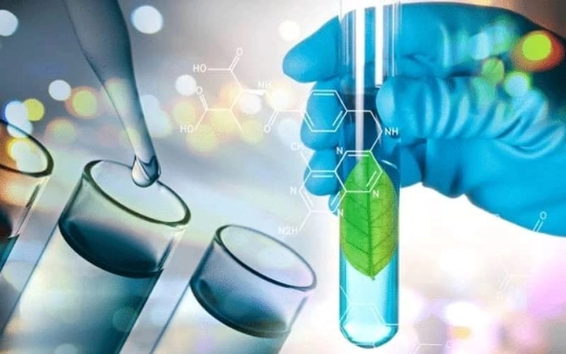
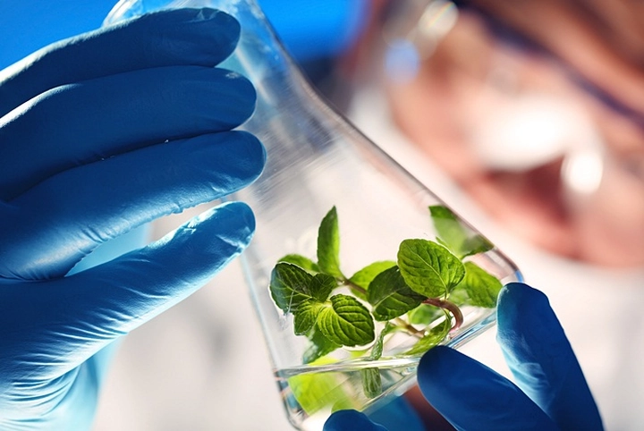

Sinh học tổng hợp - Kỷ nguyên thiết kế sự sống và công nghệ gene hiện đại
Sinh học tổng hợp (Synthetic Biology) là một trong những lĩnh vực khoa học tiên tiến nhất hiện nay, kết hợp sinh học, kỹ thuật và công nghệ thông tin để tạo ra các sinh vật, gene circuits và hệ thống sinh học nhân tạo. Không chỉ mở ra cánh cửa mới cho y học, nông nghiệp và công nghiệp, sinh học tổng hợp còn hứa hẹn thay đổi cách con người tương tác với tự nhiên.
Hôm nay TrithucWorld sẽ cùng bạn khám phá các khía cạnh quan trọng của lĩnh vực này thông qua bài viết này.
1. Giới thiệu về Sinh học tổng hợp
Sinh học tổng hợp (Synthetic Biology) là một lĩnh vực khoa học liên ngành ra đời từ đầu những năm 2000, kết hợp kiến thức về di truyền học, sinh học phân tử, công nghệ sinh học, kỹ thuật và công nghệ thông tin để tạo ra hoặc chỉnh sửa sinh vật theo nhu cầu cụ thể của con người. Khác với sinh học truyền thống chỉ nghiên cứu và giải thích những hiện tượng tự nhiên, sinh học tổng hợp hướng tới thiết kế và xây dựng các hệ thống sinh học hoàn toàn mới. Điều này bao gồm việc thiết kế gene circuits, tế bào nhân tạo, vi sinh vật tổng hợp và các hệ thống sinh học với chức năng được lập trình trước.
Mục tiêu của sinh học tổng hợp không chỉ là tạo ra những sinh vật hoặc protein mới, mà còn là tối ưu hóa, điều chỉnh và kiểm soát các chức năng sinh học theo cách mà tự nhiên không cung cấp. Ví dụ, các nhà khoa học có thể thiết kế vi khuẩn để sản xuất insulin hoặc nhiên liệu sinh học, xây dựng tế bào cảm biến phát hiện chất độc, hoặc tạo ra các mạch gene có thể phản ứng thông minh với môi trường.
Sinh học tổng hợp cũng được ví như “lập trình máy tính với vật liệu sinh học”. DNA, RNA và protein trở thành những khối xây dựng mà các nhà nghiên cứu có thể sắp xếp, sửa đổi hoặc lập trình lại để tạo ra các chức năng mong muốn. Điều này mở ra cơ hội vô hạn trong việc phát triển các ứng dụng y học cá thể hóa, nông nghiệp thông minh, sản xuất công nghiệp sinh học và các giải pháp bảo vệ môi trường.
Một điểm đặc biệt là sinh học tổng hợp không chỉ tập trung vào các sinh vật đơn lẻ, mà còn hướng tới tích hợp các hệ thống sinh học phức tạp, nơi nhiều sinh vật hoặc nhiều gene circuits tương tác với nhau để thực hiện các chức năng cao cấp. Nhờ vậy, lĩnh vực này không chỉ là công cụ nghiên cứu mà còn là nền tảng để thiết kế sinh học một cách có hệ thống, dự đoán được và kiểm soát được, từ đó nâng cao hiệu quả và giảm thiểu rủi ro trong ứng dụng thực tế.
Ngoài ra, sinh học tổng hợp còn mở ra các lĩnh vực nghiên cứu mới như tế bào nhân tạo, vi sinh vật tổng hợp, protein thiết kế, vật liệu sinh học, và hệ thống sinh học mô phỏng, tạo điều kiện cho các nhà khoa học thử nghiệm các ý tưởng sáng tạo mà trước đây chỉ có trong lý thuyết. Với tốc độ phát triển nhanh chóng và sự hỗ trợ từ công nghệ CRISPR, trí tuệ nhân tạo và công nghệ mô phỏng, sinh học tổng hợp đang trở thành một trong những ngành khoa học tiên tiến, có tiềm năng thay đổi cách con người sống và tương tác với môi trường xung quanh.
2. Các nguyên lý cơ bản của Sinh học tổng hợp
Sinh học tổng hợp dựa trên các nguyên lý cơ bản của sinh học phân tử, di truyền học và kỹ thuật hệ thống, nhưng được mở rộng theo hướng thiết kế và lập trình. Thay vì chỉ quan sát các phản ứng tự nhiên trong tế bào, các nhà khoa học sử dụng khối xây dựng sinh học như gene, promoter, enhancer, ribosome binding site và protein để tạo ra các hệ thống mô phỏng hoặc điều khiển các chức năng cụ thể.
Một trong những nguyên lý quan trọng là modularity (tính mô-đun). Tế bào được coi như một tập hợp các module độc lập, ví dụ như module sản xuất protein, module cảm biến môi trường, module phản ứng tín hiệu. Nhờ cách tiếp cận mô-đun, các nhà nghiên cứu có thể “lắp ráp” các module này như các khối LEGO để tạo ra những hệ thống mới, đồng thời dễ dàng thay thế hoặc cải tiến mà không làm ảnh hưởng toàn bộ sinh vật.
Nguyên lý thứ hai là orthogonality (tính tách biệt). Các hệ thống gene được thiết kế phải hoạt động độc lập với hệ thống sinh học tự nhiên của tế bào, nhằm tránh xung đột và tạo ra kết quả dự đoán được. Điều này giúp các nhà khoa học kiểm soát hành vi của sinh vật tổng hợp một cách chính xác, giảm nguy cơ ảnh hưởng tới chức năng sinh học tự nhiên.
Nguyên lý thứ ba là standardization (tiêu chuẩn hóa). Các khối gene, promoter, protein và enzyme được chuẩn hóa để dễ dàng kết hợp, mô phỏng và nhân rộng. Sự chuẩn hóa này giúp sinh học tổng hợp trở thành một ngành khoa học có thể chia sẻ, tái sử dụng và nâng cấp, tương tự như phần mềm hoặc linh kiện điện tử trong kỹ thuật.
Ngoài ra, tính mô phỏng và thiết kế in silico cũng đóng vai trò then chốt. Nhờ các công cụ máy tính, các nhà nghiên cứu có thể mô phỏng trước các mạch gene, dự đoán phản ứng của tế bào và tối ưu hóa hệ thống trước khi thử nghiệm thực tế. Điều này không chỉ tăng hiệu quả nghiên cứu mà còn giảm thiểu rủi ro trong các thí nghiệm sinh học trực tiếp.
3. Ứng dụng trong y học
Sinh học tổng hợp đang mở ra những cơ hội đột phá trong y học hiện đại, từ điều trị cá thể hóa đến phát triển thuốc mới và vắc-xin. Một trong những ứng dụng nổi bật là thiết kế vi sinh vật hoặc tế bào tổng hợp để sản xuất protein và kháng thể phục vụ điều trị bệnh. Ví dụ, vi khuẩn tổng hợp hoặc nấm men được lập trình để sản xuất insulin, hormone tăng trưởng, hoặc các protein trị liệu khác với năng suất cao và chi phí thấp hơn nhiều so với phương pháp truyền thống.
Ngoài ra, sinh học tổng hợp còn được sử dụng trong chẩn đoán và điều trị ung thư. Các nhà khoa học có thể lập trình các tế bào T tổng hợp (CAR-T cells) để nhận diện tế bào ung thư và tấn công chính xác, đồng thời giảm thiểu tác dụng phụ trên các tế bào khỏe mạnh. Hệ thống gene cảm biến còn cho phép theo dõi dấu hiệu sinh học trong cơ thể và kích hoạt các phản ứng điều trị khi cần thiết, mở ra hướng tiếp cận “y học thông minh” và cá thể hóa.
Trong lĩnh vực vắc-xin, công nghệ sinh học tổng hợp cho phép thiết kế các mạch gene tổng hợp nhanh chóng để tạo ra vắc-xin RNA hoặc DNA, rút ngắn thời gian phát triển và sản xuất. Điều này đặc biệt quan trọng trong các tình huống dịch bệnh bùng phát, nơi thời gian là yếu tố sống còn.

Các công cụ sinh học tổng hợp còn được ứng dụng trong nghiên cứu gen và điều chỉnh gene để phát hiện các đột biến gây bệnh, từ đó hỗ trợ phát triển các liệu pháp gen trị liệu. Nhờ đó, y học hiện nay không chỉ dựa vào thuốc điều trị mà còn tiến tới can thiệp trực tiếp vào cơ chế di truyền, mở ra kỷ nguyên y học cá thể hóa thực sự.
4. Ứng dụng trong nông nghiệp và môi trường
Sinh học tổng hợp cũng đang tạo ra những cách tiếp cận mới trong nông nghiệp thông minh và bảo vệ môi trường. Trong nông nghiệp, các nhà nghiên cứu có thể lập trình vi sinh vật hoặc cây trồng để tăng năng suất, cải thiện khả năng kháng bệnh hoặc chịu hạn, đồng thời giảm phụ thuộc vào phân bón và thuốc trừ sâu. Ví dụ, cây trồng tổng hợp có thể cảm biến được thiếu hụt dinh dưỡng và tự điều chỉnh quá trình trao đổi chất, giúp tối ưu hóa năng suất mà không gây hại môi trường.
Ngoài ra, sinh học tổng hợp được dùng để tạo ra các vi sinh vật phân hủy chất thải hoặc chất độc trong đất và nước. Các vi sinh vật được thiết kế đặc biệt này có thể phân hủy nhựa, kim loại nặng, hoặc các hợp chất hữu cơ độc hại, từ đó giúp làm sạch môi trường một cách bền vững.
Các hệ thống vi sinh vật tổng hợp còn được phát triển để sản xuất nhiên liệu sinh học và vật liệu sinh học thay thế nhựa truyền thống, giảm lượng khí thải carbon và góp phần vào phát triển kinh tế tuần hoàn. Đồng thời, nhờ khả năng lập trình gene, các nhà khoa học có thể kiểm soát chính xác quá trình chuyển hóa của vi sinh vật, giảm nguy cơ sinh vật thoát ra môi trường và tạo ra các biện pháp an toàn sinh học tiên tiến.
Trong nông nghiệp và môi trường, sinh học tổng hợp không chỉ mang lại hiệu quả kinh tế mà còn tạo ra giải pháp xanh, bền vững và thân thiện với môi trường, mở ra hướng phát triển nông nghiệp thông minh và quản lý tài nguyên thiên nhiên hiệu quả hơn.
5. Ứng dụng trong công nghiệp
Sinh học tổng hợp đang cách mạng hóa nhiều ngành công nghiệp nhờ khả năng sáng tạo các sinh vật và enzyme tùy chỉnh để sản xuất vật liệu, hóa chất và nhiên liệu sinh học. Một trong những ứng dụng nổi bật là sản xuất enzym và protein công nghiệp để thay thế các hóa chất tổng hợp, giúp giảm tác động môi trường và tăng hiệu quả kinh tế. Ví dụ, enzym tổng hợp được sử dụng trong công nghiệp giấy, dệt may hoặc chế biến thực phẩm có thể thực hiện các phản ứng hóa học phức tạp mà trước đây chỉ có thể làm bằng hóa chất mạnh, nhưng lại thân thiện môi trường và ít tốn năng lượng.
Sinh học tổng hợp còn được áp dụng trong sản xuất nhiên liệu sinh học thế hệ mới, chẳng hạn như cồn sinh học, hydro, hoặc các hợp chất hữu cơ phức tạp. Nhờ khả năng lập trình gene của vi sinh vật, các nhà nghiên cứu có thể tối ưu hóa các đường chuyển hóa để sản xuất nhiên liệu với năng suất cao, giảm chi phí và hạn chế phát thải khí nhà kính.
Ngoài ra, sinh học tổng hợp còn mở ra cơ hội tạo ra vật liệu sinh học mới, từ nhựa sinh học phân hủy nhanh đến sợi polymer bền chắc, thậm chí là vật liệu xây dựng. Những vật liệu này không chỉ thân thiện với môi trường mà còn có thể tùy chỉnh về tính chất cơ học, màu sắc, và độ bền theo nhu cầu sản xuất.
Nhìn chung, ứng dụng trong công nghiệp không chỉ mang lại lợi ích kinh tế trực tiếp mà còn giúp các doanh nghiệp phát triển theo hướng bền vững, xanh và hiệu quả hơn, đồng thời mở ra những lĩnh vực sản xuất hoàn toàn mới mà trước đây chưa từng có.
6. Ứng dụng trong thực phẩm và dinh dưỡng
Sinh học tổng hợp đang từng bước thay đổi cách chúng ta sản xuất và tiêu thụ thực phẩm. Nhờ khả năng lập trình gene và xây dựng các vi sinh vật tổng hợp, các nhà nghiên cứu có thể sản xuất thực phẩm chức năng, protein thay thế thịt, và các hợp chất dinh dưỡng phức tạp mà không cần nguồn động vật hoặc cây trồng truyền thống.
Ví dụ, sữa, pho mát và thịt tổng hợp được sản xuất từ vi sinh vật có thể cung cấp đầy đủ dưỡng chất mà không cần chăn nuôi, giảm thiểu phát thải khí nhà kính và tiết kiệm nước, đất, đồng thời không làm tổn hại động vật. Sinh học tổng hợp còn cho phép sản xuất axit amin, vitamin, và probiotic với độ tinh khiết cao, phục vụ cho ngành thực phẩm chức năng và y học dinh dưỡng.
Ngoài ra, sinh học tổng hợp cũng giúp tăng cường giá trị dinh dưỡng của cây trồng. Nhờ chỉnh sửa gene, thực phẩm có thể được thiết kế để giàu vitamin, khoáng chất hoặc kháng bệnh mà không cần sử dụng hóa chất. Những công nghệ này không chỉ hướng đến an toàn thực phẩm và dinh dưỡng cao hơn mà còn đáp ứng nhu cầu ngày càng tăng của dân số toàn cầu.
Nhờ đó, sinh học tổng hợp đang mở ra kỷ nguyên thực phẩm thông minh và bền vững, nơi mỗi sản phẩm đều có thể được thiết kế để tối ưu hóa dinh dưỡng, vị giác và tác động môi trường.
7. Ứng dụng trong năng lượng và môi trường
Sinh học tổng hợp không chỉ ứng dụng trong sản xuất vật liệu và thực phẩm mà còn là giải pháp cho các vấn đề năng lượng và môi trường. Các nhà khoa học có thể lập trình vi sinh vật tổng hợp để sản xuất nhiên liệu sinh học, biohydrogen, hoặc các hợp chất thay thế xăng dầu truyền thống với hiệu suất cao, thân thiện môi trường và có khả năng tái tạo. Điều này giúp giảm sự phụ thuộc vào nhiên liệu hóa thạch và cắt giảm phát thải carbon.
Bên cạnh đó, sinh học tổng hợp còn giúp giải quyết vấn đề ô nhiễm. Các vi sinh vật được thiết kế đặc biệt có thể phân hủy nhựa, kim loại nặng, dầu loang, hoặc các hợp chất hữu cơ độc hại trong đất, nước và không khí. Nhờ khả năng lập trình gene, quá trình phân hủy có thể được kiểm soát chính xác, đảm bảo an toàn sinh học và giảm nguy cơ gây hại cho hệ sinh thái tự nhiên.
Các hệ thống vi sinh vật tổng hợp còn được phát triển để tái chế chất thải hữu cơ, sản xuất vật liệu sinh học mới, thậm chí là chuyển hóa khí CO2 thành các hợp chất hữu ích. Đây là nền tảng cho kinh tế tuần hoàn xanh, nơi chất thải được biến thành nguyên liệu, đồng thời giảm áp lực lên tài nguyên thiên nhiên.
Tổng thể, ứng dụng trong năng lượng và môi trường cho thấy sinh học tổng hợp không chỉ là công nghệ sáng tạo mà còn là chìa khóa để xây dựng tương lai bền vững, kết hợp giữa hiệu quả sản xuất và bảo vệ môi trường.
8. Ứng dụng trong y học và dược phẩm
Sinh học tổng hợp đang mở ra những cơ hội đột phá trong y học và dược phẩm, từ nghiên cứu gene, phát triển thuốc đến thiết kế các liệu pháp cá thể hóa. Nhờ khả năng lập trình DNA và RNA, các nhà khoa học có thể tạo ra vi sinh vật tổng hợp và tế bào nhân tạo để sản xuất thuốc, kháng thể, vaccine và các protein điều trị với độ tinh khiết cao và chi phí thấp hơn so với phương pháp truyền thống.
Một trong những ứng dụng nổi bật là vaccine tổng hợp và liệu pháp gen, nơi các nhà nghiên cứu có thể thiết kế các vector gene chính xác, nhằm kích thích phản ứng miễn dịch đặc hiệu hoặc chỉnh sửa gene bị đột biến gây bệnh. Ngoài ra, sinh học tổng hợp còn giúp tái tạo các mô và cơ quan nhân tạo bằng kỹ thuật in sinh học (bioprinting), mang đến hy vọng cho việc thay thế mô hỏng hoặc điều trị các bệnh hiểm nghèo.
Sinh học tổng hợp cũng đang thúc đẩy y học cá thể hóa, nơi thuốc và liệu pháp được thiết kế dựa trên gene và tình trạng sinh lý riêng của từng bệnh nhân. Điều này giúp tăng hiệu quả điều trị, giảm tác dụng phụ và mở ra kỷ nguyên mới của dược phẩm thông minh và chuẩn xác.
9. Ứng dụng trong nông nghiệp
Sinh học tổng hợp đang thay đổi cách chúng ta trồng trọt và chăn nuôi, mang đến nông nghiệp thông minh, bền vững và hiệu quả hơn. Nhờ chỉnh sửa gene và thiết kế vi sinh vật, cây trồng có thể được tối ưu hóa để chống sâu bệnh, chịu hạn, tăng năng suất và giàu dinh dưỡng mà không cần lạm dụng hóa chất độc hại.
Ngoài ra, các vi sinh vật tổng hợp có thể được sử dụng để cải thiện đất và hệ sinh thái nông nghiệp, phân hủy chất thải hữu cơ, cố định đạm tự nhiên hoặc tăng cường hấp thụ dinh dưỡng cho cây trồng. Trong chăn nuôi, vi sinh vật tổng hợp còn có thể hỗ trợ sản xuất thức ăn giàu protein, probiotic và enzyme tiêu hóa, giúp vật nuôi khỏe mạnh và giảm tác động môi trường từ phân thải.

Sinh học tổng hợp còn mở ra khả năng tạo ra các loại cây trồng và thực phẩm mới, từ trái cây, rau củ đến các loại protein thay thế thịt, phù hợp với nhu cầu dinh dưỡng, khẩu vị và thị trường toàn cầu. Điều này giúp nông nghiệp trở nên linh hoạt, sáng tạo và thích ứng tốt với biến đổi khí hậu, đồng thời giảm áp lực lên tài nguyên thiên nhiên.
10. Tương lai và thách thức
Mặc dù tiềm năng của sinh học tổng hợp là vô cùng lớn, lĩnh vực này vẫn đối mặt với những thách thức khoa học, đạo đức và an toàn sinh học. Việc thiết kế và tạo ra sinh vật tổng hợp đòi hỏi kiến thức chuyên sâu, công nghệ cao và quy trình kiểm soát chặt chẽ để tránh rủi ro ngoài ý muốn.
Ngoài ra, vấn đề đạo đức và luật pháp cũng đang được quan tâm, đặc biệt liên quan đến quyền sở hữu gene, tác động lên hệ sinh thái và việc sử dụng sinh vật tổng hợp trong y học hoặc nông nghiệp. Các quốc gia đang nỗ lực xây dựng khung pháp lý và quy chuẩn an toàn sinh học để đảm bảo công nghệ được phát triển và ứng dụng một cách có trách nhiệm.
Trong tương lai, sinh học tổng hợp được kỳ vọng sẽ trở thành công cụ thay đổi thế giới, từ chăm sóc sức khỏe cá nhân, sản xuất thực phẩm và vật liệu bền vững, đến giải quyết các vấn đề môi trường và năng lượng. Nếu được quản lý đúng cách, lĩnh vực này sẽ mở ra một kỷ nguyên công nghệ sinh học hiện đại, nơi con người có thể thiết kế, tối ưu hóa và khai thác sinh vật một cách thông minh, an toàn và sáng tạo.